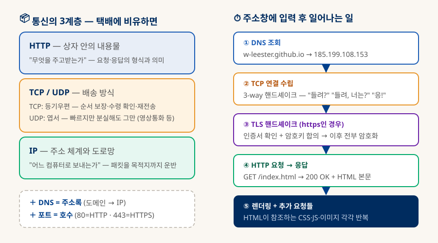
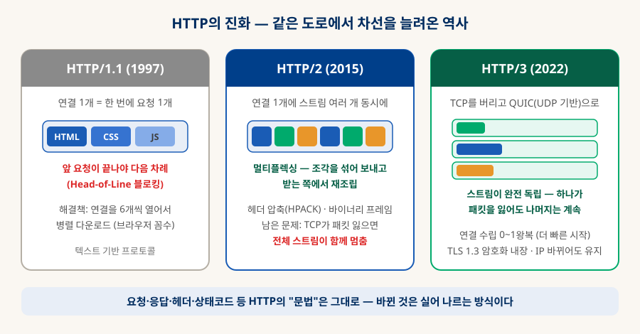
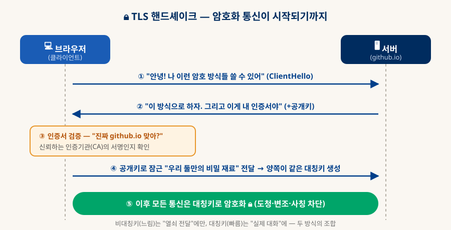
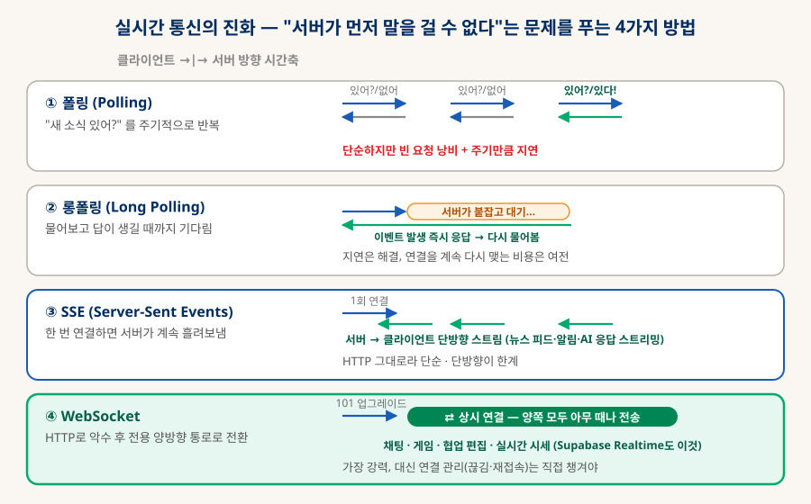

네트워크 통신 정리
HTTP · REST · 그리고 실시간
브라우저에 주소를 입력한 순간부터 화면이 뜨기까지 무슨 일이 일어나는가 — IP·TCP·DNS라는 기반 위에 HTTP가 어떻게 동작하고, REST API는 무엇을 약속하며, 서버가 먼저 말을 걸어야 하는 순간(WebSocket)은 어떻게 해결하는지를 한 문서로 정리한다.
0. 한눈에 보기 — 주소창 입력에서 화면까지
네트워크의 모든 개념은 이 5단계 여정 어딘가에 산다
주소창에 w-leester.github.io/knowledge-db를 입력하고 엔터를 누르면: ① DNS가 이름을 IP 주소로 바꾸고 ② TCP가 서버와 연결을 수립하고 ③ TLS가 암호화 통로를 만들고 ④ HTTP가 문서를 요청·수신하고 ⑤ 브라우저가 렌더링하며 CSS·폰트·SVG를 추가로 요청한다. 이 문서의 1~5장은 이 다섯 단계를 하나씩 해부하는 여정이다.
(HTTP는 80)
핸드셰이크
(404 = 없음, 500 = 서버 오류)
(프로토콜 업그레이드)
1. 기반 — IP · TCP · UDP · DNS · 포트
HTTP가 달리는 도로부터 이해한다: 택배 시스템에 비유하면 전부 명쾌해진다
인터넷 통신은 층층이 쌓인 구조다. 택배에 비유하면 — IP는 "주소 체계와 도로망"(어느 컴퓨터로 갈 것인가), TCP는 "등기우편"(순서 보장·수령 확인·분실 시 재전송), UDP는 "엽서"(빠르지만 분실해도 책임 안 짐), 그리고 HTTP는 "상자 안의 내용물"(주고받는 내용의 형식)이다. 여기에 DNS(사람이 기억하는 이름 → IP 주소를 찾는 주소록)와 포트(한 컴퓨터 안에서 어떤 프로그램에게 갈지 정하는 호수)가 더해지면 기반은 끝이다.

| 개념 | 택배 비유 | 실제 역할 |
|---|---|---|
| IP | 주소 체계 + 도로망 | 모든 기기에 붙는 번호(예: 185.199.108.153). 패킷을 목적지 컴퓨터까지 운반한다. 배달 순서·성공은 보장하지 않음. |
| TCP | 등기우편 | 순서 보장·수령 확인·재전송. 연결을 먼저 수립(3-way 핸드셰이크)하고 통신한다. 웹·메일·파일 전송 등 "정확해야 하는" 통신의 기본. |
| UDP | 엽서 | 확인 절차 없이 그냥 던진다. 빠르고 가볍지만 분실 가능. 영상통화·게임·실시간 스트리밍 — "늦은 데이터는 버리는 게 나은" 통신에 사용. HTTP/3(QUIC)의 기반이기도 하다. |
| DNS | 주소록(전화번호부) | "w-leester.github.io가 어디야?" → IP 주소로 변환. 계층적 분산 시스템이며 결과는 곳곳에 캐싱된다. |
| 포트 | 아파트 호수 | 같은 컴퓨터 안의 여러 프로그램 구분. 80=HTTP, 443=HTTPS, 22=SSH처럼 관례로 정해진 번호가 있다. |
TCP 핸드셰이크는 왜 3번 왕복인가?
서로가 "보낼 수 있고 + 받을 수 있음"을 확인해야 하기 때문이다. ① 클라이언트 → 서버: "연결하자" (SYN) — 서버는 '클라이언트가 보낼 수 있음'을 알게 됨. ② 서버 → 클라이언트: "좋아, 나도 연결하자" (SYN+ACK) — 클라이언트는 '서버가 받고+보낼 수 있음'을 알게 됨. ③ 클라이언트 → 서버: "확인!" (ACK) — 서버도 '클라이언트가 받을 수 있음'을 확인. 2번이면 서버가 클라이언트의 수신 능력을 확신할 수 없고, 4번은 불필요하다.
2. HTTP — 웹의 공용어
"요청 하나, 응답 하나, 그리고 아무것도 기억하지 않는다"
HTTP의 정체는 놀랄 만큼 단순하다: 클라이언트가 요청(Request)을 보내면 서버가 응답(Response)을 돌려주는 텍스트 규약. 그리고 중요한 성질 하나 — 무상태(Stateless). 서버는 이전 요청을 기억하지 않는다. 모든 요청은 처음 보는 것처럼 처리되며, "로그인 상태" 같은 기억이 필요하면 쿠키·토큰을 요청에 실어 매번 증명해야 한다. 이 단순함이 웹을 수억 대 규모로 확장 가능하게 만든 비결이다.
A요청과 응답의 해부 — 실제로 오가는 텍스트
GET /knowledge-db/docs.json HTTP/2 ← 메서드 + 경로 + 버전 Host: w-leester.github.io ← 어느 사이트에게 Accept: application/json ← 이런 형식으로 받고 싶다 If-None-Match: "abc123" ← 캐시 검증용 (아래 참조)
HTTP/2 200 ← 상태 코드: 성공 Content-Type: application/json ← 본문의 형식 ETag: "abc123" ← 이 버전의 지문 Cache-Control: max-age=600 ← 10분간 재요청 없이 써도 됨 { "docs": [ ... ] } ← 본문(Body)
| 메서드 | 의미 | 비고 |
|---|---|---|
| GET | 조회 | 데이터를 가져온다. 몇 번을 반복해도 상태가 변하지 않아야 함(안전). 브라우저 주소창 접속은 전부 GET. |
| POST | 생성·처리 | 새 자원을 만들거나 서버에 처리를 맡긴다. 반복하면 결과가 달라질 수 있음(글 2개 등록). |
| PUT | 전체 교체 | 자원을 통째로 바꾼다. 같은 요청을 몇 번 보내도 결과는 동일(멱등). |
| PATCH | 부분 수정 | 자원의 일부 필드만 수정. |
| DELETE | 삭제 | 자원을 지운다. 역시 멱등 — 이미 지워진 것을 또 지워도 "없음"이라는 결과는 같다. |
| 상태 코드 | 뜻 | 대표 예 |
|---|---|---|
| 2xx 성공 | 요청이 처리됨 | 200 OK · 201 Created(생성됨) · 204 No Content(성공, 돌려줄 내용 없음) |
| 3xx 리다이렉트 | 다른 곳으로 가라 | 301 영구 이동 · 304 Not Modified — "네 캐시 그대로 써" (본문 없이 헤더만, 대역폭 절약) |
| 4xx 클라이언트 잘못 | 요청이 문제 | 400 요청 형식 오류 · 401 인증 필요 · 403 권한 없음 · 404 자원 없음 · 429 요청 과다 |
| 5xx 서버 잘못 | 서버가 문제 | 500 서버 내부 오류 · 502 게이트웨이 오류 · 503 과부하·점검 중 |
BHTTP/1.1 → 2 → 3 — 문법은 그대로, 배송만 진화
HTTP의 요청·응답·헤더·상태 코드라는 "문법"은 30년 가까이 그대로다. 진화한 것은 그 메시지를 실어 나르는 방식이다. 1.1의 문제(한 줄로 줄서기)를 2가 멀티플렉싱으로 풀었고, 2에 남은 문제(TCP 차원의 줄서기)를 3이 전송 프로토콜 교체(QUIC/UDP)로 풀었다.

HOL(Head-of-Line) 블로킹 — 두 번 등장하는 같은 문제
HTTP/1.1의 HOL: 한 연결에서 앞 요청의 응답이 끝나야 다음 응답이 온다. 큰 이미지 하나가 뒤의 작은 CSS들을 다 막는다. HTTP/2는 응답을 조각(프레임)으로 섞어 보내며 이를 해결했다.
HTTP/2의 HOL: 그런데 TCP 자체가 "순서 보장" 프로토콜이라, 패킷 하나가 유실되면 그 뒤에 도착한 모든 패킷이 — 다른 스트림 것이어도 — 재전송을 기다리며 멈춘다. HTTP/3는 TCP를 버리고 UDP 위에 스트림별 독립 배송(QUIC)을 구현해 이 마지막 줄서기까지 없앴다. 같은 병목이 층을 옮겨가며 두 번 나타났고, 두 번 다 "줄을 나누는" 방향으로 해결된 셈이다.
3. HTTPS / TLS — 자물쇠가 채워지기까지
HTTP는 엽서다 — 중간에서 누구나 읽고 고칠 수 있다
평문 HTTP의 세 가지 위험: 도청(같은 와이파이의 누군가가 내용을 봄), 변조(중간자가 응답에 광고·악성코드를 끼워 넣음), 사칭(가짜 서버가 진짜인 척). HTTPS = HTTP + TLS라는 암호화 층이며, TLS는 이 셋을 각각 암호화 · 무결성 검증 · 인증서로 막는다. 오늘날 웹의 90% 이상이 HTTPS이고, 브라우저는 평문 HTTP 사이트에 "주의 요함"을 띄운다.

🔑 두 종류의 열쇠
대칭키: 잠글 때와 열 때 같은 키. 빠르지만 "키를 어떻게 전달하나"가 문제. 비대칭키: 공개키로 잠그면 개인키로만 열림. 느리지만 키 전달 문제가 없음. TLS는 비대칭으로 대칭키를 합의한 뒤 대칭으로 통신한다.
📜 인증서와 CA
"이 공개키는 진짜 github.io의 것"임을 신뢰받는 제3자(인증기관, CA)가 서명으로 보증. 브라우저에는 신뢰하는 CA 목록이 내장돼 있고, 서명 체인을 따라가 검증한다.
🆓 Let's Encrypt
2015년 무료·자동화 인증서 발급이 등장하며 HTTPS가 보편화됐다. GitHub Pages가 이 사이트에 https를 자동으로 제공하는 것도 같은 흐름 — 오늘날 인증서에 돈 낼 일은 거의 없다.
4. REST API — HTTP를 "잘 쓰기로 한 약속"
규격이 아니라 스타일이다 — 자원은 명사로, 행위는 메서드로
API는 프로그램끼리 대화하는 창구다. 그중 REST(2000, Roy Fielding 논문)는 "HTTP가 이미 가진 것들을 원래 의도대로 쓰자"는 설계 스타일이다. 핵심 규칙은 단 두 줄 — ① URL은 자원(명사)을 가리킨다: /docs/3 ("3번 문서"). ② 행위는 HTTP 메서드(동사)로 표현한다: 같은 URL에 GET이면 조회, DELETE면 삭제. /getDocList.php?action=delete처럼 URL에 동사를 욱여넣던 시대와의 결별이다.
| 요청 | 의미 | 성공 응답의 예 |
|---|---|---|
| GET /docs | 목록 조회 | 200 + 문서 배열 |
| GET /docs/3 | 하나 조회 | 200 + 3번 문서 (없으면 404) |
| POST /docs | 생성 | 201 + 만들어진 문서 (Location 헤더에 새 주소) |
| PUT /docs/3 | 전체 수정 | 200 + 수정된 문서 |
| PATCH /docs/3 | 부분 수정 | 200 + 수정된 문서 |
| DELETE /docs/3 | 삭제 | 204 (본문 없음) |
주고받는 본문은 사실상 JSON이 표준이다. 사람이 읽을 수 있고, 모든 언어가 다루며, JavaScript와 궁합이 완벽하다. 그리고 REST의 무상태 원칙 덕분에 — 어떤 서버가 요청을 받아도 결과가 같아야 하므로 — 서버를 수평으로 늘리는 확장이 쉬워진다 (DB 문서에서 본 Scale-Out과 정확히 이어지는 이야기다).
멱등성(Idempotency) — 재시도 버튼을 눌러도 되는가
같은 요청을 여러 번 보내도 결과가 한 번 보낸 것과 같으면 멱등하다. GET·PUT·DELETE는 멱등, POST는 아니다(주문 POST를 두 번 = 주문 2건). 네트워크가 끊겨 "성공했는지 모르는" 상황에서 멱등한 요청은 안심하고 재시도할 수 있지만 POST 재시도는 중복 처리 위험이 있다 — 결제 API들이 Idempotency-Key 헤더를 따로 받는 이유다.
5. 실시간 통신 — 서버가 먼저 말을 걸어야 할 때
채팅 메시지가 도착했다. 그런데 HTTP에서는 서버가 먼저 알려줄 방법이 없다
HTTP의 대원칙 "요청해야 응답한다"는 치명적 공백을 하나 남긴다 — 새 채팅 메시지, 시세 변동, 알림처럼 서버 쪽에서 먼저 생기는 사건을 클라이언트가 알 방법이 없다. 이 문제를 푸는 네 가지 방법이 순서대로 진화해 왔고, 지금도 상황에 따라 넷 다 쓰인다.

WebSocket이 가장 흥미로운 지점은 시작 방식이다 — 처음에는 평범한 HTTP 요청으로 문을 두드린 뒤, 서버가 101 Switching Protocols로 응답하면 그 연결이 통째로 양방향 상시 통로로 전환된다. 방화벽·프록시가 HTTP(80/443)만 통과시키는 현실에서, HTTP로 위장 입장한 뒤 갈아타는 영리한 설계다.
# 클라이언트: 평범한 GET처럼 보내되… GET /chat HTTP/1.1 Upgrade: websocket ← "이 연결을 웹소켓으로 바꾸자" Connection: Upgrade # 서버가 승낙하면 HTTP/1.1 101 Switching Protocols ← 이 순간부터 HTTP가 아니다 # 이후: 같은 연결에서 양쪽이 아무 때나 메시지 프레임 전송 ⇄
| 방식 | 방향 | 지연 | 어울리는 곳 |
|---|---|---|---|
| 폴링 | 클라 → 서버 반복 | 주기만큼 지연 | 갱신이 드물고 몇 초 늦어도 되는 것 — 배송 조회, 이 앱의 "새 문서 확인"도 사실상 이 방식 |
| 롱폴링 | 클라 → 서버 (대기) | 거의 즉시 | WebSocket을 못 쓰는 환경의 대안, 알림 |
| SSE | 서버 → 클라 단방향 | 즉시 | 피드·알림·진행률, AI 챗봇의 글자 스트리밍(ChatGPT 응답이 타자 치듯 나오는 것) |
| WebSocket | 양방향 ⇄ | 즉시 | 채팅·게임·협업 편집·실시간 대시보드 — 양쪽이 수시로 말해야 하는 모든 것 |
6. 그 너머 — gRPC와 GraphQL은 언제 쓰나
REST가 항상 정답은 아니다 — 다만 기본값일 뿐
REST의 두 가지 불편이 각각 다른 대안을 낳았다. ① 텍스트 JSON은 기계끼리 대화엔 무겁다 → gRPC. ② 화면마다 필요한 데이터가 달라 과잉/과소 조회가 생긴다 → GraphQL.
🚀 gRPC
구글이 만든 원격 호출 프레임워크. HTTP/2 + Protobuf(바이너리 직렬화)로 JSON보다 훨씬 작고 빠르며, 스키마에서 각 언어의 코드가 자동 생성된다. 마이크로서비스 내부 통신의 사실상 표준. 브라우저 직접 호출은 번거로워 외부 API로는 드물다.
🧬 GraphQL
페이스북이 만든 쿼리 언어. 클라이언트가 필요한 필드만 골라 한 번에 요청한다 ("문서의 제목과 태그만, 작성자의 이름도 같이"). 화면이 다양한 앱에서 과잉 조회(over-fetching)와 여러 번 왕복(under-fetching)을 동시에 해결. 대신 서버 구현·캐싱이 REST보다 복잡하다.
⚖️ 선택 기준
기본값은 REST — 단순하고, 도구·캐싱·인력 모두 풍부하다. 서비스 내부의 고성능 기계간 통신이면 gRPC, 다양한 클라이언트가 제각각의 데이터 조합을 원하면 GraphQL. "REST로 시작해서 아픈 곳이 생기면 그 부분만 갈아탄다"가 실무의 정석.
7. 이 앱의 통신 해부 — 배운 것을 지금 이 화면에서 확인하기
서버 코드 0줄인 이 지식 문서함도, 열어보면 이 문서의 개념 전부가 굴러가고 있다
| 이 앱의 동작 | 실제로 일어나는 통신 |
|---|---|
| 홈 화면 열기 | DNS 조회 → TCP+TLS 연결(§1·§3) → GET /knowledge-db/ → 200 + index.html. GitHub Pages의 인증서 덕에 자물쇠가 뜬다. |
| 문서 목록 렌더링 | fetch('docs.json') — REST식 자원 조회(§4). 실패하면 안내 문구 폴백. |
| 폰트·SVG 로드 | HTML 파싱 중 발견되는 대로 병렬 요청(§2). HTTP/2 멀티플렉싱이라 연결 하나로 수십 파일을 동시에. |
| 문서 수정 반영 | PC에서 push → Pages 재배포 → 폰이 재방문 시 ETag가 달라져 304 대신 200 + 새 본문(§2 캐싱). |
| 새 문서 확인 | 홈에 들어올 때마다 docs.json을 다시 조회 — 본질적으로 폴링(§5)이다. 실시간일 필요가 없으니 이걸로 충분. |
| (Phase 3) 오프라인 | Service Worker가 fetch를 가로채 Cache Storage에서 응답 — 브라우저 안에 "가짜 서버"를 두는 셈. HTTP 의미론(요청/응답)을 그대로 흉내 낸다. |